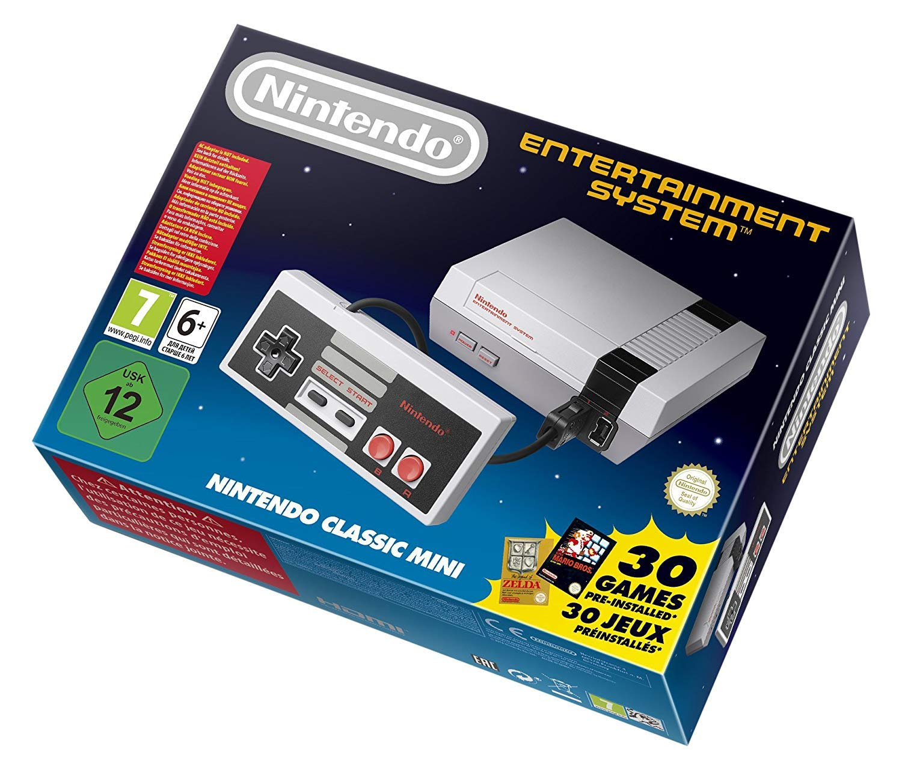
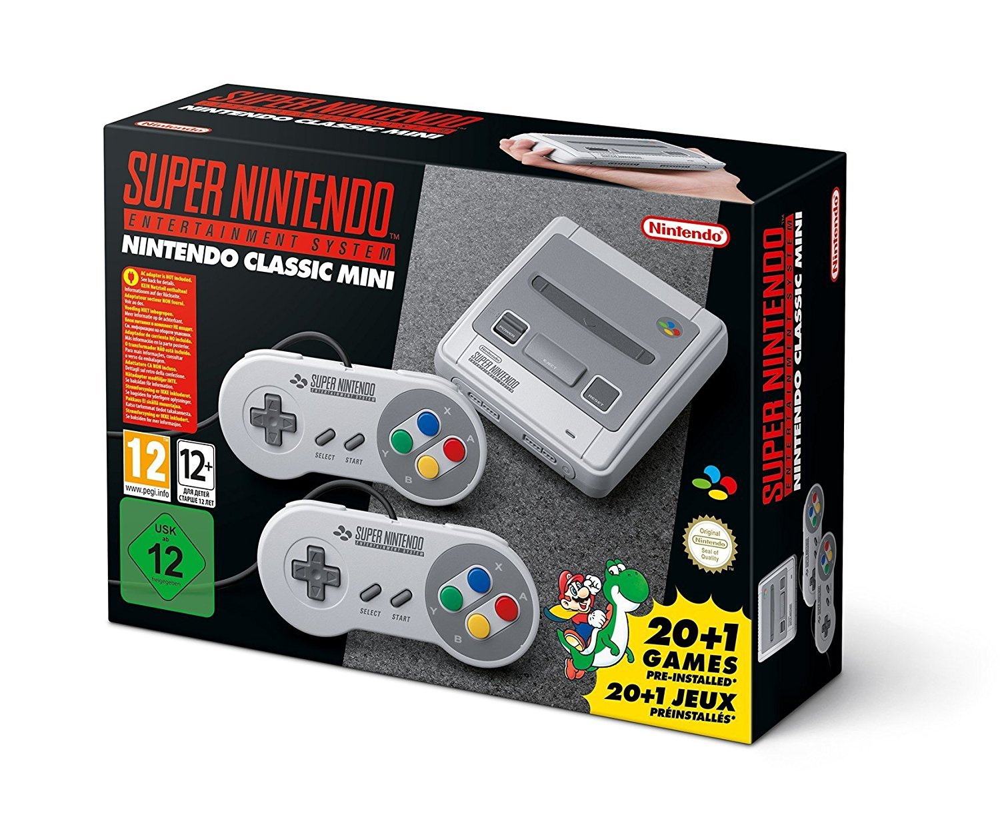

Les primeres consoles, com la Magnavox Odyssey, van introduir el concepte de videojoc domèstic.
Tot i els seus gràfics rudimentaris, van establir les bases d’una nova forma d’entreteniment
que aviat es convertiria en un fenomen global.
La NES i la Master System van marcar una revolució.
Van definir gèneres com les plataformes, els RPG i els shooters, i van introduir sagues
que encara avui són referents: Mario, Zelda, Metroid, Alex Kidd…
La rivalitat entre SEGA Mega Drive i Super Nintendo va portar
innovacions tècniques i artístiques. Aquesta època va donar vida a jocs llegendaris com
Sonic, Super Mario World, Street Fighter II o Chrono Trigger.
Amb la PlayStation i el CD-ROM, els videojocs van fer el salt definitiu al 3D.
Aquesta transició va transformar completament la manera de jugar i va obrir la porta a
experiències més cinematogràfiques i narratives.
Evolució de les consoles
Les consoles domèstiques van revolucionar la manera de jugar. Des de l’Atari 2600 fins a la NES,
SEGA Mega Drive i la Super Nintendo, cada generació va aportar innovacions tècniques i culturals
que van definir el futur del videojoc.
Als anys 90, Sony va entrar amb força amb la PlayStation, introduint el CD-ROM i els gràfics 3D.
Aquesta nova tecnologia va permetre mons més grans, històries més profundes i una experiència
de joc completament renovada.
Exemples icònics

Nintendo Entertainment SystemSEGA Mega Drive

Super NintendoSony PlayStation